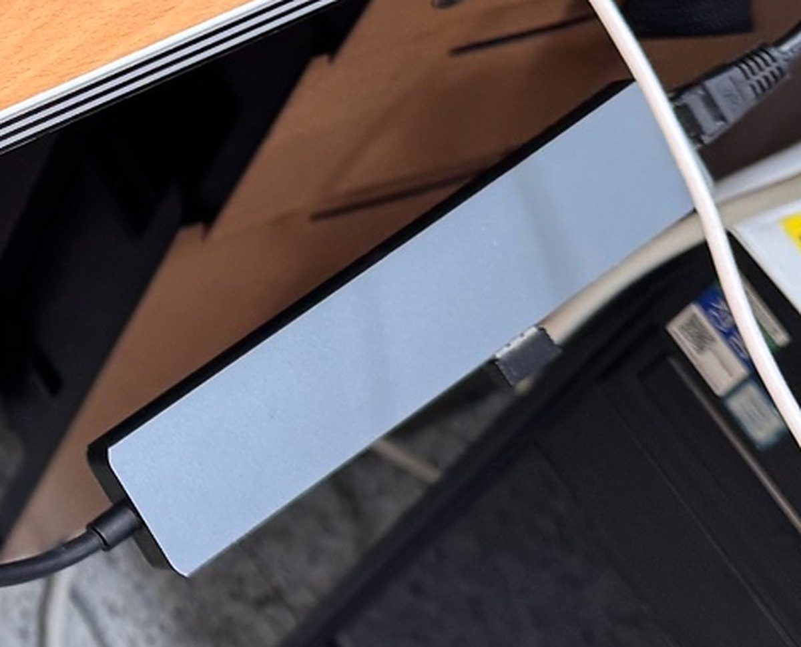

현장에서 필요한 도구를,
폰 하나로.
USB-C 이더넷 어댑터로 전력량계, PLC, 게이트웨이의 Modbus TCP를 점검하는 안드로이드 앱을 만듭니다. LTE·Wi‑Fi와 장비망을 섞지 않고, 현장에서 값을 바로 읽고 씁니다.
앱 카탈로그
카테고리별로 앱을 소개합니다. 지금은 현장 계측 도구 하나부터, 앞으로 늘어날 앱도 같은 목록에 쌓입니다.
모드버스 체커 — USB 이더넷 계측기 점검
노트북과 케이블을 꺼내지 않아도 됩니다. 폰과 USB-C 이더넷 어댑터로 장비에 붙어 링크를 확인하고, 레지스터를 읽고, 필요하면 씁니다.
할 수 있는 일
현장에서 쓰는 순서


USB-C to RJ45 이더넷 컨버터는 따로 챙겨야 합니다
모드버스 체커는 앱만으로 장비에 붙지 않습니다. CDC-ECM을 지원하는 USB-C to RJ45 이더넷 컨버터를 별도로 준비해 폰이나 태블릿에 연결하고, 여기에 현장 랜선을 꽂아야 통신이 됩니다.
※ 사진에 나온 컨버터는 연결 예시이며, 특정 제품 추천은 아닙니다.
가격과 광고
별도 결제 없이 무료, 광고 포함
프로필, 스캔, 추세를 포함한 점검 기능을 모두 무료로 씁니다. 별도 결제는 없고, 화면 아래에 배너 광고가 한 줄 나옵니다. 광고 요청은 LTE·Wi‑Fi로만 나가 장비망으로는 가지 않습니다.
앱은 광고가 포함된 무료 앱으로만 배포됩니다. 별도 결제나 구매 절차가 없습니다.
알아 둘 점
한눈에 보기
만든 사람
Lion Park · 박시호
Independent Android developer
현장 계측과 빌딩 자동화를 다루며, 그 자리에서 쓰던 불편을 앱으로 풉니다. 설명서 없이도 쓸 수 있고, 필요한 기능만 남기는 편입니다.
모드버스 체커는 한국어, 영어, 일본어에서 같은 기능을 제공합니다. 현장에 따라 언어가 달라도 같은 방식으로 점검할 수 있게 했습니다.
문의
버그, 기능 제안, 번역 오류 모두 메일로 받습니다. 앱 관련 문의는 앱 이름과 폰 기종을 함께 적어 주시면 빨리 확인할 수 있습니다.
- Emailparksiho@gmail.com
- StoreGoogle Play · Modbus Checker
- Privacy개인정보처리방침